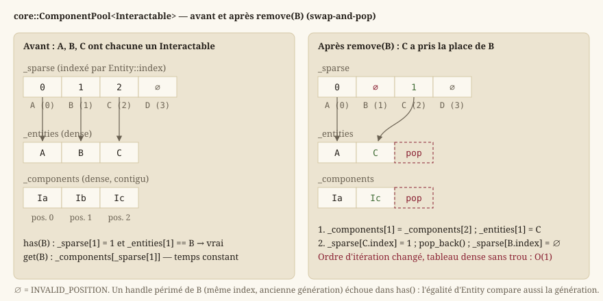

ECS : entités, composants, systèmes
Cette page explique le patron d'architecture Entity-Component-System (ECS ⧉) depuis ses principes, puis détaille l'implémentation maison de Source/Core/Ecs : le handle d'entité, le gestionnaire de cycle de vie, le stockage en sparse set, les vues, la façade World, et les cinq composants que le moteur définit — y compris le clip d'animation, qui est une donnée et non une logique.
Le problème que l'ECS résout
Dans un moteur orienté objet « classique », on modéliserait naturellement un personnage par une classe Character héritant de GameObject, avec des méthodes comme update(), render(), takeDamage(). Très vite, ce modèle par héritage devient un obstacle dans un jeu :
- un PNJ a besoin d'une position, d'un visuel, d'une fiche de personnage et d'être sollicitable ; un coffre a besoin d'une position, d'un visuel et d'être sollicitable, mais pas de fiche ; un décor animé n'a besoin que d'une position et d'un visuel. L'héritage simple ne capture pas ces combinaisons : on finit avec une hiérarchie de classes profonde, ou des interfaces vides à implémenter « pour la forme » ;
- ajouter un comportement à une seule sorte d'objet (par exemple, rendre les coffres destructibles) oblige à modifier une classe existante ou à multiplier les sous-classes ;
- itérer sur « tous les objets sollicitables » demande de parcourir des objets hétérogènes en testant leur type dynamiquement, ce qui est lent et fragile.
L'ECS répond en séparant radicalement trois notions que l'orienté objet mélange dans une seule classe :
- Entité : juste un identifiant. Aucune donnée, aucun comportement — un numéro qui désigne « une chose qui existe dans le monde ».
- Composant : une donnée pure, sans aucune méthode de logique (
EX-ARCH-011) — par exemple une position (core::Transform), un visuel (core::Sprite), un état d'animation (core::Animation), une cible d'interaction (core::Interactable) ou le lien vers une fiche de personnage (core::RpgActor). Un composant répond à la question « quelle donnée ? », jamais « que fait cette donnée ? ». - Système : la logique, qui parcourt toutes les entités possédant un certain ensemble de composants et les fait évoluer — par exemple une logique qui désigne, parmi les entités
Interactable, celle que le personnage vise.
Un PNJ n'est alors qu'une entité qui possède les composants Transform, Sprite, Interactable et RpgActor — une combinaison de données, pas une classe dédiée. Un coffre est une entité avec Transform, Sprite et Interactable, mais sans RpgActor. Ajouter un comportement à un sous-ensemble d'entités revient à écrire un nouveau système qui parcourt les composants pertinents, sans toucher au reste. La règle d'or à retenir : les données vivent dans les composants, la logique vit dans les systèmes ; un composant ne contient jamais de comportement, un système ne stocke jamais d'état de jeu à demeure (il le lit/écrit dans les composants, qui restent la seule source de vérité).
L'entité : core::Entity
Une entité (core::Entity) est un handle générationnel : une paire {index, generation}, deux entiers 32 bits non signés (core::Entity::Index, core::Entity::Generation).
indexest la position de l'entité dans les tableaux internes — c'est ce qui permet un accès en temps constant.generationest un compteur qui protège contre un piège classique : quand une entité est détruite, sonindexest recyclé (réutilisé pour une future entité, plutôt que de croître indéfiniment). Sans précaution, un ancien handle vers l'entité détruite désignerait alors, par accident, la nouvelle entité qui a récupéré le mêmeindex— un bug silencieux et difficile à diagnostiquer, où du code croit encore manipuler l'ancien personnage. En incrémentantgenerationà chaque recyclage d'index, un handle périmé (ancienne génération) ne correspond plus à l'entité courante (nouvelle génération) : la comparaisonoperator==compare les deux champs, donchas()/getComponent()rejettent proprement un handle obsolète au lieu de renvoyer les données d'une entité sans rapport.
Deux valeurs conventionnelles complètent le type : core::Entity::INVALID_INDEX (tous les bits à 1) est l'index qu'aucune entité vivante ne porte, et core::INVALID_ENTITY est le handle {INVALID_INDEX, 0} — ce qu'une fonction renvoie pour dire « aucune entité », plutôt qu'un std::optional<Entity> qui alourdirait chaque comparaison. Un Entity construit par défaut vaut INVALID_ENTITY.
Une entité, à elle seule, ne « fait » rien : elle ne devient un personnage, un décor ou un coffre que par les composants qu'on lui attache.
Le cycle de vie : core::EntityManager
core::EntityManager est la classe qui crée, détruit et valide les handles. Le World la possède et la cache : le code applicatif ne l'appelle jamais directement, mais comprendre ce qu'elle garantit explique le comportement de World::createEntity et World::destroyEntity.
Elle tient trois tableaux, tous indexés par Entity::index : la génération courante de chaque index, un drapeau de vie par index, et une liste libre des index rendus par une destruction.
core::EntityManager::create— renvoie un handle vivant, distinct de toute entité vivante. S'il existe un index dans la liste libre, il est repris avec la génération qui lui a été attribuée à sa libération ; sinon un nouvel index est ouvert en fin de tableau. Temps constant amorti, aucune allocation par entité.core::EntityManager::destroy— marque l'index mort, incrémente sa génération et le pousse dans la liste libre. Sans effet si le handle n'est pas vivant (déjà détruit, ou périmé) : détruire deux fois n'est pas une erreur, et un handle périmé ne peut pas tuer par accident l'entité qui a repris son index.core::EntityManager::isAlive— vrai si l'index est marqué vivant et que la génération du handle est la génération courante. C'est le test que tout accès aux composants fait en amont.core::EntityManager::aliveCount— le nombre d'entités vivantes, tenu à jour à chaque création et destruction ; utile aux tests et aux diagnostics, jamais parcouru.
Pourquoi une liste libre. Sans recyclage, chaque entité créée pendant une partie (un projectile, un PNJ d'une carte quittée) laisserait un index derrière elle et les tableaux — ceux du gestionnaire comme le tableau creux de chaque pool — grandiraient sans borne. Le recyclage borne la mémoire au nombre maximal d'entités simultanées, et la génération rend ce recyclage sûr.
Le core::World
core::World est le point d'entrée unique de la simulation : il possède les entités (par son EntityManager), les composants (une pool par type) et les systèmes. Il possède toutes ses ressources (RAII) : aucun état global, aucune connaissance du rendu — la dépendance HMI → Core reste à sens unique (EX-ARCH-010).
core::World::createEntity/core::World::destroyEntity— cycle de vie d'une entité ; la destruction retire automatiquement tous ses composants, dans toutes les pools (voirIComponentPoolci-dessous, qui existe précisément pour rendre cela possible sans connaître chaque type de composant à l'avance), puis rend l'index au gestionnaire. Sans effet sur une entité qui n'est pas vivante.core::World::isAlive— délègue àEntityManager::isAlive.core::World::addComponent— attache une copie de la valeur à l'entité. Précondition, vérifiée parJADG_ASSERT: l'entité est vivante et n'a pas encore ce type de composant.core::World::hasComponent— vrai si une pool de ce type existe et contient l'entité ; ne crée jamais de pool (la fonction estconst), ce qui la rend sans effet de bord même pour un type jamais vu.core::World::getComponent— référence en lecture-écriture sur le composant ; préconditionhasComponent. La référence n'est valable que jusqu'au prochainaddComponentouremoveComponentdu même type (voir le swap-and-pop).core::World::removeComponent— retire le composant d'un type d'une entité ; préconditionhasComponent.core::World::view— une vue sur les entités possédant tous les composants listés (détail ci-dessous).core::World::addSystem,core::World::update,core::World::systemCount— l'orchestration des systèmes, en dernière section.
Chaque type de composant obtient sa propre pool, créée à la demande au premier addComponent<T> (ou au premier view<…, T, …>) : le World ne connaît pas à l'avance la liste des types de composants qui existeront, il les découvre à l'usage, avec std::type_index comme clé d'un unordered_map. Ce choix évite toute liste centrale de types à tenir à jour — ajouter un composant, c'est déclarer une struct, rien d'autre.
Le stockage : sparse set (core::ComponentPool)
Le besoin est double et a priori contradictoire :
- itérer vite sur tous les composants d'un type (par exemple, tous les
Transform), ce qui demande un tableau contigu en mémoire (pas de trous) pour profiter du cache du processeur ; - accéder vite au composant d'une entité précise (« quel est le
Transformde l'entité 42 ? »), ce qui demande normalement un tableau indexé directement parindex, quitte à laisser des trous pour les entités qui n'ont pas ce composant.
Le sparse set ⧉ concilie les deux avec deux tableaux :
- un tableau dense (
_components) : les composants, sans aucun trou, dans l'ordre où ils ont été ajoutés — c'est lui que les systèmes parcourent ; un tableau_entitiesparallèle retient quelle entité possède chaque composant dense ; - un tableau creux (
_sparse), indexé directement parEntity::index: pour chaque entité potentielle, il donne la position de son composant dans le tableau dense (ou une valeur sentinellecore::ComponentPool::INVALID_POSITIONsi elle n'a pas ce composant). Ce tableau peut avoir des trous — peu importe, on n'itère jamais dessus, on ne fait que le lire à un index précis.
{kind=link}

L'interface type-effacée : core::IComponentPool
Le World range des pools de types différents dans un même conteneur. Il lui faut donc une interface commune, sans paramètre de type : core::IComponentPool, qui ne déclare qu'une opération, core::IComponentPool::removeIfPresent(entity) — « retire le composant de cette entité s'il y en a un, et dis-moi si tu l'as fait ». C'est la seule chose que le World a besoin de faire sans connaître le type : quand une entité meurt, il appelle removeIfPresent sur chaque pool. Tout le reste (ajout, accès, itération) passe par la pool typée, retrouvée par std::type_index.
L'API de core::ComponentPool<T>
| Fonction | Rôle | Précondition et coût |
|---|---|---|
core::ComponentPool::add(entity, component) | Copie le composant en fin de tableau dense et enregistre sa position dans le tableau creux, agrandi si l'index dépasse sa taille. | L'entité n'a pas ce composant (JADG_ASSERT). O(1) amorti. |
core::ComponentPool::remove(entity) | Swap-and-pop, ci-dessous. | L'entité a ce composant. O(1). |
core::ComponentPool::removeIfPresent(entity) | remove sans précondition ; renvoie false si l'entité n'avait rien. | Aucune. O(1). |
core::ComponentPool::has(entity) | Index dans les bornes du creux, position valide, et entité stockée égale (génération comprise). | Aucune. O(1). |
core::ComponentPool::get(entity) | Référence (mutable ou constante) sur le composant, par le creux. | has(entity). O(1). |
core::ComponentPool::size, core::ComponentPool::empty | Taille du tableau dense — c'est ce que la vue compare pour choisir sa pool pilote. | — |
core::ComponentPool::entities, core::ComponentPool::components | Les deux tableaux denses, en lecture seule, dans le même ordre : entities()[i] possède components()[i]. | — |
has() teste l'égalité complète du handle stocké et non seulement la validité de la position : c'est là que la génération joue. Un handle périmé a le même index qu'une entité vivante qui a peut- être ce composant ; la position lue dans le creux serait valide, mais l'entité stockée à cette position a une autre génération, donc has() répond false.
Ajout et suppression : swap-and-pop
add(entity, component) ajoute simplement en fin de tableau dense et enregistre sa position dans le tableau creux — coût O(1).
remove(entity) est plus subtil : retirer un élément au milieu d'un tableau dense en décalant tout ce qui suit coûterait O(n). La technique du swap-and-pop l'évite :
- on repère la position
removeddu composant à retirer dans le tableau dense ; - on écrase cette position avec le dernier élément du tableau (
_components[removed] = _components[last]), pour l'entité et le composant ; - on met à jour le tableau creux de l'entité déplacée (celle qui était en dernière position) pour qu'il pointe désormais vers
removed; - on retranche le dernier élément (
pop_back) — devenu un doublon — et on marque l'entité retiréeINVALID_POSITIONdans le creux.
Résultat : le tableau dense reste sans trou en coût O(1), au prix de changer l'ordre d'itération (l'élément déplacé change de position). Comme les systèmes ne dépendent jamais de cet ordre, ce n'est jamais un problème.
Exemple pas à pas
Imaginons trois entités A, B, C ayant chacune un composant Interactable, dans cet ordre d'insertion : dense = [Ia, Ib, Ic], entités = [A, B, C]. On retire le composant de B (position 1) :
removed = 1,last = 2;_components[1] = _components[2]→ dense devient[Ia, Ic, Ic];_entities[1] = C;- le tableau creux de
Cest mis à jour : il pointe maintenant vers la position 1 ; pop_back()→ dense final =[Ia, Ic], entités =[A, C].
C a « pris la place » de B dans le tableau dense — l'itération reste dense et rapide, et get(C) continue de fonctionner grâce au tableau creux mis à jour.
Attention — Conséquence pour qui écrit un système : une référence obtenue par
get()(ou dans une vue) est invalidée par toutadd()ouremove()ultérieur sur la même pool (le tableau dense peut réallouer ou déplacer ses éléments). Ne jamais conserver une telle référence au-delà de telles opérations.
Les vues : core::View
Un système a typiquement besoin d'itérer sur « toutes les entités qui ont à la fois tel et tel composant » (par exemple Transform et Interactable pour les objets sollicitables posés sur la carte). World::view<A, B, …>() construit une core::View qui joint les pools demandées et n'expose que l'intersection — les entités présentes dans toutes. Les types demandés sont supposés distincts : view<Transform, Transform> n'a pas de sens et n'est pas défendu.
Pour rester efficace, la vue ne parcourt pas la pool la plus grande en testant les autres : elle choisit comme « pilote » la plus petite des pools demandées (celle avec le moins de composants, comparées par size()) et ne teste l'appartenance aux autres pools que pour les entités de ce pilote. Le coût de l'itération est ainsi borné par la plus petite population parmi les types demandés, jamais par la plus grande — l'intersection ne peut de toute façon pas être plus grande que son plus petit opérande. Le choix est refait à chaque parcours : une vue n'a pas d'état, elle ne tient que des pointeurs sur les pools.
Deux syntaxes équivalentes :
for (auto [entity, transform, sprite] : world.view<Transform, Sprite>()) {
transform.scale = {2.0f, 2.0f};
}
// équivalent, forme fonctionnelle :
world.view<Transform, Sprite>().each(
[](core::Entity, core::Transform& t, core::Sprite&) { t.scale = {2.0f, 2.0f}; });core::View::each(function)— appellefunction(entity, composants&...)pour chaque entité retenue. C'est la forme la plus directe et la moins coûteuse.core::View::begin/core::View::end— renvoient uncore::View::Iterator, un itérateur avant qui, déréférencé, donne unstd::tuple<Entity, Components&...>— d'où la liaison structuréeauto [entity, a, b]. L'itérateur avance dans le tableau pilote et saute les entités absentes d'une autre pool (skipToMatch) ; sa construction se positionne déjà sur la première entité valide, si bien qu'une vue vide donnebegin() == end()sans détour.
C'est exactement le motif d'un système : une vue, une lambda, la logique de mise à jour.
Attention — Contrat d'itération : à l'intérieur d'un
eachou d'une boucle sur une vue, on ne modifie que la valeur des composants obtenus. Ajouter/retirer un composant ou détruire une entité pendant l'itération invaliderait la vue (les pools sous-jacentes peuvent bouger, cf. swap-and-pop ci-dessus) — ce type de modification structurelle doit être différé après l'itération.
Les systèmes et l'ordre d'exécution
core::ISystem est l'interface d'un système : une seule méthode, core::ISystem::update(world, fixedDelta), qui reçoit le monde (pour y ouvrir des vues) et la durée du pas — constante, jamais le temps réel (Boucle de jeu et pas de temps fixe). Un système ne détient aucun état de simulation : tout ce qu'il calcule s'écrit dans des composants.
core::World::addSystem(std::unique_ptr<ISystem>) enregistre un système, dont le World prend possession ; core::World::update(fixedDelta) exécute tous les systèmes enregistrés, dans l'ordre d'enregistrement, une fois par pas de temps fixe ; core::World::systemCount en donne le nombre. Cet ordre est significatif et fait partie du contrat de déterminisme (EX-NFR-002, EX-ARCH-030) : deux systèmes qui lisent et écrivent les mêmes composants doivent s'exécuter dans un ordre stable pour produire toujours le même résultat.
Aucun système n'est enregistré aujourd'hui : le mécanisme est en place, mais la logique qui existe n'en a pas eu besoin. Le monde se peuple par core::spawnMapEntities, qui crée une entité par entité de carte (core::MapEntity, Niveaux : modèle, couches, entités, chargement) — un Transform à sa case, et un Interactable si son type figure dans core::knownInteractableKinds (coffre, panneau, PNJ…). Une logique qui a besoin de données que l'ISystem générique ne transporte pas (la grille de la carte, l'orientation du personnage, les drapeaux de monde) prend alors la forme d'une fonction libre à signature dédiée, comme core::findInteractionTarget. Le principe reste identique : la logique lit des composants et n'en garde aucun état.
Les composants du moteur
Cinq composants vivent dans Source/Core/Ecs/Components. Tous sont des agrégats sans logique (EX-ARCH-011) ; les deux fonctions membres qui existent (isConsumable, hasSheet) sont des lectures d'un champ, pas des comportements.
core::Transform — où, à quelle échelle, dans quel sens
| Champ | Défaut | Sens |
|---|---|---|
position (core::Vector2) | (0, 0) | Position du repère de l'entité en unités monde — une case = une unité, origine haut-gauche, Y vers le bas (EX-ARCH-020). |
scale | (1, 1) | Facteurs d'échelle horizontal et vertical ; 1 = taille nominale. |
rotation | 0 | En radians, la convention native de std::sin/std::cos (Mathématiques du moteur). |
core::Sprite — quoi dessiner
Un Sprite dit quelle région d'un atlas dessiner, dans quelle couche et avec quelle teinte — et rien de plus : aucune ressource GPU, aucun chemin de fichier (EX-ARCH-012). Deux types auxiliaires l'accompagnent :
core::AtlasRegion— un rectanglex, y, width, heighten pixels de texture, origine haut-gauche. En pixels et non en coordonnées normalisées[0, 1], parce queCorene connaît pas la taille de l'atlas : la normalisation est l'affaire du rendu, qui la connaît.core::Color— quatrefloatr, g, b, adans[0, 1], blanc opaque par défaut : la teinte neutre, qui laisse la texture inchangée.
core::Sprite::layer est un entier : une valeur plus grande se dessine au-dessus. La taille à l'écran ne figure pas ici — elle découle du Transform et de l'échelle du rendu (Rendu 2D : de la scène à l'écran).
core::Animation, core::AnimationClip et core::ClipSet — l'animation comme donnée
Un moteur animé a besoin de savoir, pour chaque entité animée, quelle image montrer maintenant. Le moteur sépare la description d'une animation (une suite d'images et leur durée : le clip) de l'état d'une entité dans cette animation (le composant).
core::AnimationClip est un clip : un name (unique dans son jeu : « idle », « opening »), la suite frames des indices d'images dans la spritesheet, la frameDuration en secondes (0, ou une seule image : pose figée, jamais animée), et sa fin — core::ClipEndMode::Loop revient à la première image (EX-REN-012) ; core::ClipEndMode::OneShot s'arrête à la dernière et bascule sur le clip nommé par nextClip (vide ou inconnu : on reste sur la dernière image, jamais une erreur). C'est une donnée pure : ni spritesheet, ni taille d'image, ni fichier — la traduction en région de texture appartient à HMI. Un enum figé des clips aurait fait de Core un catalogue d'apparences à modifier à chaque objet animé (EX-ARCH-012) ; une struct chargée depuis un fichier nom-asset.anim.json ne le demande pas.
core::ClipSet est un jeu de clips nommés — l'unité que décrit un fichier .anim.json :
core::ClipSet::addClip— ajoute un clip ; un clip du même nom qu'un clip présent le remplace ;core::ClipSet::indexOf(name)— l'index du clip, ou-1s'il n'existe pas. Le nom se résout en index une fois, à la sélection ; la progression au pas fixe ne compare jamais de chaîne, même pour des centaines de tuiles animées ;core::ClipSet::clipCount;core::ClipSet::clipAt(index)— accès sûr (EX-NFR-040) : un index hors bornes retombe sur le premier clip, et un jeu vide rend un clip par défaut (nom vide, une image d'indice 0, figé). L'appelant peut toujours lire un clip sans avoir vérifiéclipCount().
core::Animation est le composant d'état : clips, un std::shared_ptr<const ClipSet> (partagé et immuable : toutes les tuiles d'eau d'une carte pointent le même jeu sans le dupliquer ; nullptr = aucun jeu, cas que tout lecteur tolère), clipIndex (déjà résolu par indexOf), frameIndex (dans le clip, borné à frames) et elapsed (secondes écoulées depuis le passage à cette image). Le clip courant est une projection de l'état de simulation — l'action en cours d'un combattant —, jamais une source de vérité supplémentaire.
Note — Les commentaires du code nomment un
AnimationSystem: il n'existe pas dansCoreaujourd'hui. Ce qui fait avancer une animation vit dansHMI, au temps réel du rendu (hmi::ArenaAnimationDriverpour les figurines du Colisée,hmi::AnimationCatalogpour la traduction en région de texture). Le composant et le clip, eux, restent dansCorepour le jour où une animation devra suivre le pas fixe.
core::Interactable — ce qu'on peut solliciter
Marque une entité comme cible d'interaction et porte de quoi la désigner, sans dire ce que l'interaction fait : un coffre, un panneau et un PNJ portent le même composant et se distinguent par leur type, chaîne libre que le gameplay interprète — la même règle que core::MapEntity, reprise ici pour qu'aucune énumération fermée n'oblige chaque lot suivant à modifier ce fichier.
| Champ | Sens |
|---|---|
type | "chest", "sign", "npc", "portal"… |
position (core::GridPosition) | La case de l'entité, en plus du Transform : l'interaction raisonne en cases (« la case devant le personnage »), et la retrouver depuis une position flottante demanderait une division dont l'arrondi déciderait du résultat aux frontières. |
consumedFlag | Clé du drapeau de monde qui dit si l'interaction a déjà eu lieu ; vide pour ce qu'on sollicite indéfiniment (panneau, PNJ), renseignée pour ce qui ne se prend qu'une fois (coffre). Fabriquée par core::keyForEntity. |
promptKey | Clé de localisation de l'invite affichée à portée — une clé, jamais un texte : Core n'écrit pas de français. Vide si rien n'est annoncé. |
core::Interactable::isConsumable vaut !consumedFlag.empty().
core::RpgActor — le lien vers une fiche
Relie une entité à sa fiche de personnage par un indice dans le registre du monde (sheetIndex), et non par la fiche elle-même. La raison de taille (une fiche porte des chaînes et des ensembles que le système de déplacement ne lit jamais) compte moins que celle-ci : une fiche n'appartient pas à une entité. Un personnage garde la sienne quand il change de carte et que son entité est détruite puis recréée (LOT-09) ; loger la fiche dans le composant lierait la vie de l'une à celle de l'autre.
core::RpgActor::INDICE_ABSENT distingue une entité sans fiche (un décor animé) d'une entité dont la fiche serait la première du registre — les confondre ferait attaquer un tonneau avec les caractéristiques du héros. core::RpgActor::hasSheet teste cette sentinelle.
Journaliser dans l'ECS
Core/Ecs/EcsLog.h fournit ECS_LOG_TRACE, ECS_LOG_INFO, ECS_LOG_WARNING et ECS_LOG_ERROR, la catégorie "Ecs" du journal (Journalisation et assertions). L'ECS s'exécute à chaque pas : ces macros se réservent aux événements rares (enregistrement d'un système, mise en place d'un monde), jamais à une opération par entité ou par pas. Les préconditions, elles, sont des JADG_ASSERT : une violation est un bug, pas un événement à consigner.
Voir aussi
core::World,core::Entity,core::INVALID_ENTITY,core::EntityManager,core::IComponentPool,core::ComponentPool,core::View.core::ISystem,core::spawnMapEntities,core::findInteractionTarget.core::Transform,core::Sprite,core::AtlasRegion,core::Color,core::Animation,core::AnimationClip,core::ClipSet,core::Interactable,core::RpgActor.- Mathématiques du moteur (les types de données des composants), Niveaux : modèle, couches, entités, chargement (les entités de carte dont naissent les entités de l'ECS).
- Boucle de jeu et pas de temps fixe — le pas que
World::updatereçoit. architecture.md— les exigences d'architecture (EX-ARCH-010,EX-ARCH-011,EX-ARCH-012).